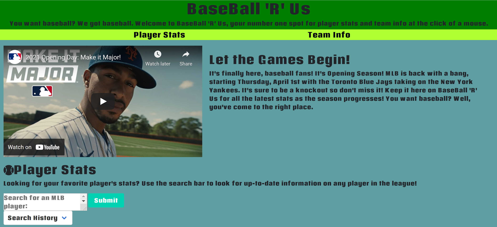

Web API Group Project
UCSD Coding Bootcamp
For this project, I was required to work in a team of four to build a webpage of our choosing that also included the implementation of two web APIs. We chose to build a MLB sports page, "Sports 'R' Us" where my group used an API from the MLB website to display searched player and team information. We alos implemented the use of local storage to save previous search terms. Ideally we would like to add to this webpage in the future to possibly add a Ticketmaster API or use other APIs to search other sports. As for my role, I was tasked with API research, debugging, HTML and CSS, with focus on the media queries.
Live Webpage GitHub Repository

Assignment User Story
- As a baseball fan, I want to search for a MLB player so I can obtain useful statistics about that player.
- As a MLB official, when I search for an MLB team I want to find contact info for that team.